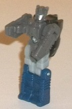

Allegiances
: Autobot
Size
: Titan ($150 U.S.)
Difficulty of Transformation
: Easy
Color Scheme:
Dark flat blue, moderately
dark gray, moderately dark red, white, and some transparent greenish blue,
silver, light pale bluish gray, and black
Rating
: 6.7 (mass retail version);
6.9 (SDCC Exclusive version)
 Emissary
Emissary

Emissary is the name
of Fortress Maximus' Titan Master's... Titan Master. Look, it all makes
sense later, let's just go along with this for now, okay? So, in robot
mode, Emissary is a fairly dull Titan Master, being light and dark gray
with some dark blue on the legs. Not exactly a stellar color scheme, but
he does largely fit with the rest of the figure and especially Cerebros,
so there's that. Most of the mold detailing is fairly generic, with some
boxy lines on his legs and little hands molded into the sides of the antennae-arms
that make up the sides of the head mode. He's got some simplistic boxy
detailing on his chest, but his head is the only part that stands out--
that's only slightly, due to the paint app on his face being the only paint
in this mode. Unfortunately, his head looks like many other small Headmasters'/Targetmasters',
so all in all Emissary's robot mode is pretty forgettable even among Titan
Masters. As with all Titan Masters, Emissary can move at the head and back-and-forth
at the shoulders, hips, and knees (with the latter two being at one point,
as the legs are one piece). In head mode, Emissary forms the head of Cerebros,
which is definitely a far more robotic-looking, less human-looking head
the Emissary's head. The rounded black helmet doesn't flush all that well
with the squareish shape of the back two-thirds of the head, but it is
certainly more unique than Emissary's look, and the silver faceplate and
single long blue bar for an optic with a slight etch in the middle for
a "nose" is quite unique among TF heads.
 Cerebros
Cerebros
When you connect Emissary
to Cerebros, a small circular portion of his chest lights up red and he
says in a robotic voice "CER-RE-BROS". (Along with possibly some sounds
meant for Fortress Maximus' robot mode-- it's a pretty sensitive pressure
pad underneath the head.) Anyways, Cerebros' robot mode is a little larger
than a deluxe, and houses the electronics for the toy, so he has a bit
more "heft" than your average deluxe as well, but he's close enough where
he can "interact" with other Generations deluxe toys. Like the headsculpt,
Cerebros looks considerably more robotic in his robot mode than Emissary
does, with more square, angular proportions. Speaking of, his proportions
are pretty darn good-- I really have no problems with him whatsoever from
a frontal view, though from a side view you can see the bulk of Fortress
Maximus' head sticking out a bit further than I'd like behind his back.
That said, Cerebros has sturdy heels to keep him from falling over, and
it doesn't get in the way of articulation, so it's not a big deal. Cerebros
mostly keeps Emissary's color scheme, being mostly black and gray, with
a bit of dark blue (this time around the shoulders). It's honestly kinda
boring, but G1-accurate. I do love the silver paint on the chest "bars"
over his sound speaker, though, and there's also some dark gray paint above
his abs. There's no paint whatsoever on his legs at all, unfortunately,
or on his shoulders. The mold detailing can be quite impressive at spots,
with the side of his legs, his abs, and the sides of his arms having very
intricate robotic detailing that isn't at all highlighted by the paint.
He also has one little peg for a Titan Master to stand on right behind
his head on the right side. For articulation, Cerebros can move at the
neck, shoulders (at two points), elbows, hips (at three points), and knees
(at two points; one due to transformation), so he's fairly poseable.
Transforming Cerebros
to Fortress Maximus' head mode mostly involves folding his arms back behind
his back, turning him upside down, making him do the splits and folding
up his feet, then flipping the "head cover" up to reveal Fortress Maximus'
face. When you do this final step, Fort Max's eyes will light up red and
you'll hear the classic G1 transformation sound. (You still keep Emissary
plugged in on the bottom.) In head mode, Cerebros looks pretty good, aping
Fortress Maximus' rather square head from G1, but allowing his side silver
antennae to stick out from the tops of his head a bit more. The vents the
feet form look great on the sides of the chin strap, though from a top
or side mode this head is a bit weaker; here you can more clearly see Cerebros'
upper legs on the top or the lower arms clearly sticking out from behind
the top of the head. There's quite a lot of mold detailing on the front
of this mode, emphasizing how massive Fortress Maximus is supposed to be.
The face has a rather emotioness expression, though that may have been
done to emphasize Fortress Maximus isn't "his own person" but controlled
by someone else. It's certainly a unique, detailed head design, though.
 Fortress
Maximus
Fortress
Maximus
Fort Max gets his first
update since his original G1 toy, and in robot mode it looks pretty good.
Proportionally, he's pretty darned solid, and avoids the "potbelly" look
of the original. Surprisingly, there aren't any extras in this mode whatsoever
from the city mode except for the ramps behind the arms. He's also fairly
stable and VERY articulated-- he can move at the neck, shoulders (at two
points), elbows (at two points), wrist rotation, movement at the base of
the thumb and at each of the four fingers on each hand (individiually),
waist rotation, and movement at the hips (at two points), and knees (at
two points). Thus, for such a hefty guy, he's pretty poseable. The mold
detailing is also outstanding; Fort Max LOOKS like he transforms into a
city, with intricate detailing everywhere, from the little guns on the
legs to the large HUGE guns below the knees (which can each rotate up to
"shoot" forward) to the little tech, plate-like details on the chest and
stomach, and even a little helipad on the small side gun on his right leg
(which can move up and down where it meets the leg). The major unique details
of Fortress Maximus are also here, such as the asymmetrical chest with
the transparent window on the right side, square shoulders, a slightly
wider stomach than usual, and the like. There's electronics, as you'd expect;
plugging the head into the body causes the toy to say one of several things.
(The eyes always light up red to match the sounds.) Pressing the button
in the center of his chest causes additional noises to play from this catalog,
like a gunshot noise, "FORTRESS MAXIMUS" in a rather heroic-sounding voice,
as well as a "powering down" noise, "AUTOBOT", a computer-y sound, a "powering
up" sound, multiple blaster sounds, "DECEPTICON", and a metal clashing
sound. The color scheme is a bit duller than the original Fort Max's, but
not by much; he has a bit less white and light gray than the original,
with more dark blue on the toy. I honestly don't mind the change as I don't
think either color scheme is all that great-- it's servicable, but not
particularly eye-catching. The red on the legs helps the guns there stand
out, and I do like the rapid dark blue-bluish-gray-white color change on
the upper legs and waist. There's a fair amount of paint apps-- particularly
the silver circles on the shoulders, lower arms, and midsection, as well
as on the guns and chest. Most of his other "paint apps" are actually stickers
you have to manually apply, just like on
Metroplex
.
It's here, though, that I need to mention the elephant in the room; Fortress
Maximus uses several parts from Generations Metroplex, including the feet,
the knees and lower legs, the detailing on the ramps behind his arms, and
on the lower arms and fingers. Although some of it works well enough for
Fort Max-- the feet and lower arms in particular-- the extra red parts
Hasbro has to put on some of these bits to "close off" what were features
on Metroplex seem slapped on and not at all what I would expect from such
an expensive toy. There's essentially red "cages" around the lower legs
to keep you from opening up those lower legs like they could on Metroplex,
but they aren't made of really firm, solid plastic, so it feels like Hasbro
is closing off a feature haphazardly that honestly would help enhance the
alt modes. The knees can also slide back and forth for no reason on Fort
Max because of this. There's also a big ill-fitting red piece on the right
arm (as that part lifted up on Metroplex), which looks off since there's
not that large section of red on the other arm. These are relatively minor
issues in robot mode, but...
...ohhh, this Battle
Station mode is... not good. It's the robot mode laid down, with the feet
flipped down and the arms flipped up, and the ramp on the upper back is
folded out. The only really interesting part of the transformation is how
the halves of the stomach fold together to form the base of the main tower,
and then you half-transform Cerebros back to his robot mode and slot it
into the top (G1 transformation sound emits as you do so) to form the top
of the tower. It's very blatantly Fort Max laying down with a few changes
made. Yeah, that happened with Metroplex too, but most of his robot parts
at least split apart, folded around, etc. Here the effort just doesn't
seem there. Why are there large platforms on the arms and legs? There's
no ramps UP to those flat aircraft carrier-like platforms, so ground vehicles
can't get on them, and there's blatantly obvious arms underneath them.
The ramps on the legs actually are partially obscured by the guns added
onto Metroplex's legs! The feet don't serve any purpose like they did on
Metroplex, they don't open up for ramps or anything. There is ONE ramp
behind the tower that is fairly short, and has an overhang piece that is
only clipped on by shallow pegs and falls off ALL. THE. TIME. The ramp
also leads to nothing but the side of a wall. I do like how the transparent
part of the chest opens up for a double-barreled turret that can rotate
and fit a Titan Master inside it, and there's a bi-level little "room"
behind the turret that has a small hatch on the "ground floor" that is,
again, Titan Master-sized. But that and the tower aside, this doesn't feel
like a fortress. It's just too darned obvious it's a robot laying on its
back. Because of how many parts are recycled from Metroplex, there's only
a few pegs for Titan Masters to stand on-- notably on the hips, for the
most part-- but not nearly as many as you'd expect on a massive toy like
this. The left arm can also fold up onto the top of the body for no reason
other to fit the toy in the box-- this adds needless extra parts to the
mold and may confuse some kids, as well. This doesn't look like a fortress...
...but the city mode
looks even LESS like a city. The city mode is literally just the Battle
Station mode with the legs splayed out. No other differences. The legs
can't even fold into themselves to make towers or something like on the
original toy? Come ON, Hasbro.
Fortress Maximus has
a nifty gimmick, what with the Headmaster-within-a-Headmaster, and both
Cerebros and Fort Max himself have pretty solid robot modes with good articulation.
The color scheme isn't great, but still passable-- but Fortress Maximus
suffers MASSIVELY in his alt modes from using parts from Metroplex. Neither
look like a CITY or a fun playground for tinier figures-- even though Metroplex's
alt modes were obviously his robot mode sitting down, at least there were
several little bits for tinier figures to interact with. Not so on Fort
Max-- he's got a dual-gun turret and a minor "room", but that's about it.
Yeah, the original Fortress Maximus had a "fat" robot mode, but he had
SO MUCH TO PLAY WITH in city mode, and Hasbro has utterly cut that out
to save some $$$ by reusing Metroplex parts. Because of all that, they
honestly shouldn't have bothered. Get a G1 Fortress Maximus reissue instead;
this guy looks nice in robot mode, but his alt modes are just awful, and
this is easily my least favorite Titan class release known about as of
this writing (2/19).
*A SDCC-exclusive version of Fortress Maximus was released for an extra $30 U.S. that included a massive sword-- a definite plus, giving him a major weapon in robot mode-- and some more G1-accurate white/light gray paint apps here and there (on the chest in particular) and a few more stickers. It's pretty much the same toy, though, so I'd only recommend that version only slightly over the mass release version.
Review by Beastbot